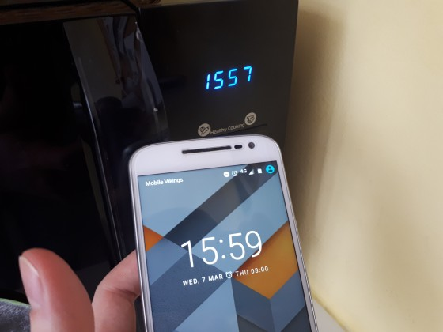

A frequência normal que é distribuída para a Europa é de 50 hertz. Desde Janeiro que passou a ser 49,996. Quatro centésimos que não parecem muito mas que, em menos de 4 meses, já provocaram, em metade dos países europeus , um atraso de 6 minutos em todos os relógios eletrónicos.
A Rede de Transmissão Europeia de Sistemas Operacionais confirmou esta falha e admitiu, também, que este problema é, realmente, de origem política entre o Kosovo e a Sérvia.
Claire Camus, diretora de comunicação da Rede de Transmissão Europeia de Sistemas Operacionais, diz que o problema passa por um "desequilíbrio no Sudeste da Europa", onde a "produção de energia" não é a mesma daquela que é distribuída.

Imagem: Twitter
A diretora de comunicação culpa esse desequilíbrio pelo atraso dos relógios. " Esse desequilíbrio significa que a frequência na rede de interligação está a cair, e isso faz atrasar os relógios que são regulados pela frequência elétrica ", diz a diretora de comunicações da Entso-E.{kind=link}
Imagem: Twitter
O Kosovo não consegue produzir energia suficiente. A Sérvia é obrigada, legalmente, a intervir.
Desde a independência do Kosovo em 2008 que a Sérvia tem negado qualquer cooperação nesta área.
Um problema político que a Europa acaba por sentir, nem que seja nos segundos que se vão "perdendo".
Fonte:
10/Mar/2018 08:49:03